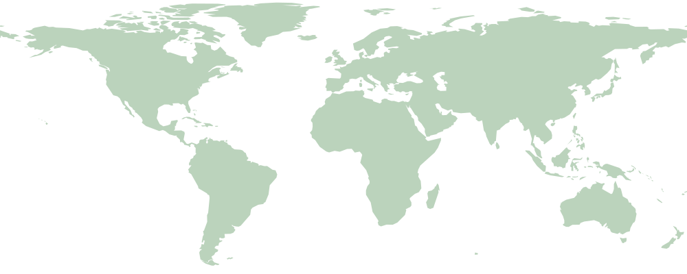
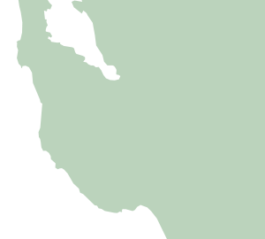

<div class="atlas">
<h1>陌生机场到访指南</h1>
<p class="lead">行前看机场图、场周航线与实飞画面，也安排落地后的第一站。</p>
<form id="airport-search" role="search"><label class="sr" for="query">搜索机场代号、名称或城市</label><input id="query" type="search" autocomplete="off" placeholder="输入机场代号、名称或城市" aria-controls="directory"><button>搜索机场</button></form>
<div class="map-tools" hidden><button type="button" id="regional">加州南湾</button><button type="button" id="world">全球视图</button><button type="button" id="pitch" aria-pressed="true">3D 地形</button></div>
<div id="terrain-map" aria-label="可旋转、缩放的机场地图" hidden></div>
<div class="map-panel" aria-label="全球地图与加州南湾局部图">
<div class="global-map"><div class="map-frame"><a href="#bay" class="locator">加州南湾</a></div></div>
<div id="bay" class="bay-map" tabindex="-1"><h2>加州南湾</h2><div class="bay-frame"><span class="ocean">Pacific Ocean</span><a class="pin rhv" href="airports/KRHV.html">KRHV</a><a class="pin e16" href="airports/E16.html">E16</a></div></div>
</div>
<div class="directory-heading"><h2>机场目录</h2><span id="count" role="status">2 座机场</span></div>
<div id="directory">
{% assign airports = site.pages | where: "layout", "airport" | sort: "code" | reverse %}
{% for airport in airports %}<a class="airport-card" data-code="{{ airport.code }}" data-position="{{ airport.position | join: ',' }}" data-search="{{ airport.code }} {{ airport.title }} {{ airport.city }} {{ airport.aliases }}" href="{{ airport.url | relative_url }}"><b>{{ airport.code }}</b><div><strong>{{ airport.title }}</strong><span>{{ airport.city }} · {{ airport.summary }}</span></div><i aria-hidden="true">↗</i></a>{% endfor %}
</div>
<p id="empty" hidden>没有匹配的机场。试试 KRHV、E16 或 San Jose。</p>
<footer>地形 <a href="https://github.com/tilezen/joerd/blob/master/docs/attribution.md">Mapzen / USGS 及数据提供方</a> · 海岸线 <a href="https://www.naturalearthdata.com/">Natural Earth</a> · 供行前熟悉机场，飞行前核对现行航图、天气与 NOTAM。</footer></div>
<script src="assets/search.js"></script>
<script defer src="assets/map/maplibre-gl.js"></script>
<script defer src="assets/atlas-map.js"></script>
